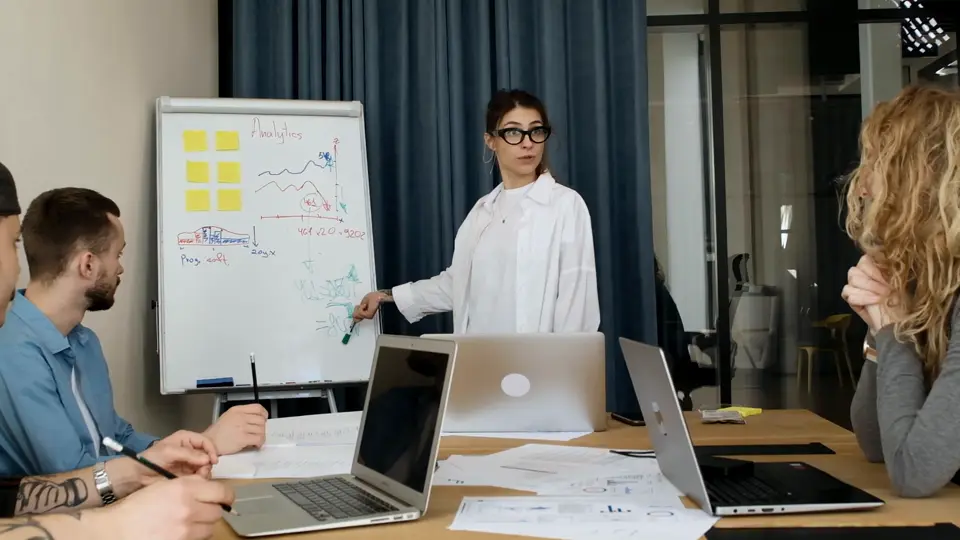

Aloituspäivä
Yksi päivä alkuun
alkaen2 500 €
- Työkalujen ja lisenssien valinta
- Tekoälyn käyttöohje
- 5 valmista työnkulkua tiimillenne
- Lähtötason mittaus
Tekoäly käyttöön · 10–200 hengen yrityksille
Työkalut ovat halpoja. Vaikeinta on saada ihmiset käyttämään niitä hyvin, ja sen me hoidamme. Valitsemme työkalut, otamme ne käyttöön, sovimme säännöt, viemme ne tiimin oikeisiin töihin ja pidämme kuukausikulut ennustettavina.
Esimerkki käyttöönotosta neljännellä viikolla. Yritys, henkilöt ja luvut ovat keksittyjä.
Yritykset heilahtavat hallitsemattomista tekoälykuluista jyrkkiin kattoihin, eikä kumpikaan toimi. Lopputuloksen ratkaisee se, kuinka hyvin ihmiset työkaluja käyttävät.
suomalaisista vähintään 10 hengen yrityksistä käyttää tekoälyä. Vain 17 %:lla niistä on sille suunnitelma.
Työterveyslaitos, tammikuu 2026Aloittelijat onnistuvat noin puolet harvemmin kuin kokeneet käyttäjät. Osaaminen ratkaisee enemmän kuin lisenssit.
Anthropicin tutkimus, kesäkuu 2026kuukaudessa: Accenturen uusi katto henkilöstön Claude-budjeteille, kun osa oli käyttänyt noin 1 000 $.
404 Media, 15.10.20261 500 $ · katto / henkilö / työkalu
henkilöä ja koodaustyökalua kohden: Uberin asettama katto tekoälykuluille.
Bloomberg, kesäkuu 2026Ei rajoja
~1 000 $
kuukaudessa osalla. Laskua ei voi ennustaa.
Yksi katto kaikille
29 $
kuukaudessa jokaiselle. Ennustettavaa, mutta se jarruttaa niitä, jotka käyttävät tekoälyä parhaiten.
Wicflow
Lähde: 404 Media, 15.10.2026 (Accenture).
Valitsemme yrityksellenne sopivat työkalut ja lisenssit ja mittaamme lähtötason.
Tunnukset, tekoälyn käyttöohje, tietosuojan ja henkilöstölle tiedottamisen tarkistukset sekä kulurajat.
Jokaiseen tiimiin oma vastuuhenkilö ja oikeat käyttötapaukset osastoittain.

04Viikoittainen käyttö, mitatuissa tehtävissä säästetty aika ja kulut käyttöönottoraportissa.
Hinnat alkaen, alv 0 % (alv 25,5 %).
Aloituspäivä
alkaen2 500 €
Käyttöönotto
alkaen8 000 €
Tehokkuuspalvelu
alkaen1 000 € / kk
AloitaOlet tässä
Tiimisi käyttää tekoälyä hyvin, turvallisesti ja hinta kurissa.
Rakenna
Yksi toimiva työnkulku teidän omalla datallanne.
Pyöritä
Pyöritämme ja kehitämme tekoälyjärjestelmiänne kuukausittain arvoraportin kera.
Se, joka sopii teille. Jos maksatte jo Copilotista tai ChatGPT:stä, aloitamme siitä, mitä teillä on. Jos ette, vertailemme vaihtoehdot työnne ja kulujenne kannalta, ja eri tiimit voivat käyttää eri työkaluja.
Sovimme säännöt siitä, mitä tekoälyyn saa liittää, käytämme yrityslisenssejä, joissa tietojanne ei käytetä koulutukseen, ja valitsemme EU-käsittelyn, kun työkalu sen tarjoaa. Tietosuojan ja henkilöstölle tiedottamisen tarkistukset kuuluvat käyttöönottoon.
Ei. Aloitamme jokaisen oikeista tehtävistä, kuten sähköposteista, tarjouksista, raporteista ja muistioista, ja tiimin vastuuhenkilö auttaa muita.
Kaksi osaa: lisenssit, jotka maksatte työkalun toimittajalle, ja tehokkuuspalvelumme alkaen 1 000 € kuukaudessa. Pidämme lisenssimixin oikeana, ettei teidän tarvitse maksaa paikoista, joita kukaan ei käytä.
20 minuutin puhelu. Katsomme, miten tiiminne työskentelee ja käyttää tekoälyä tänään, ja ehdotamme, mistä aloittaa.